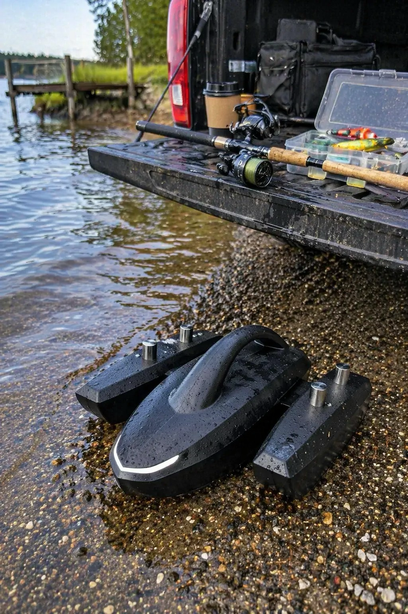
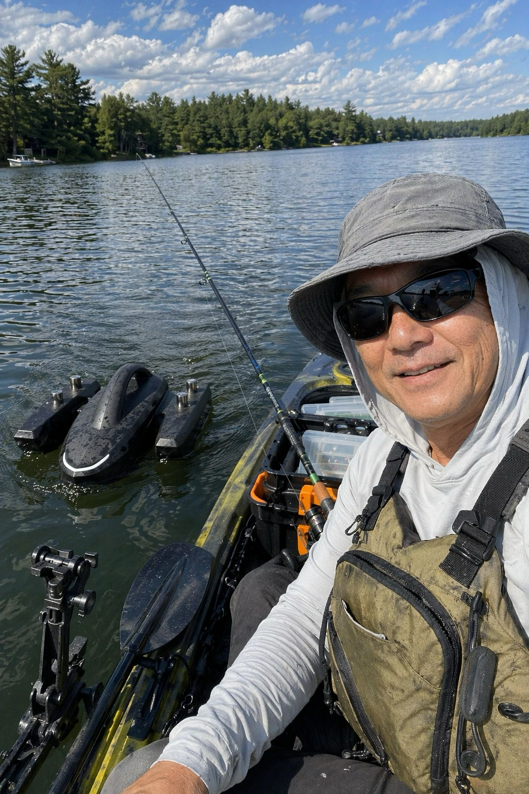
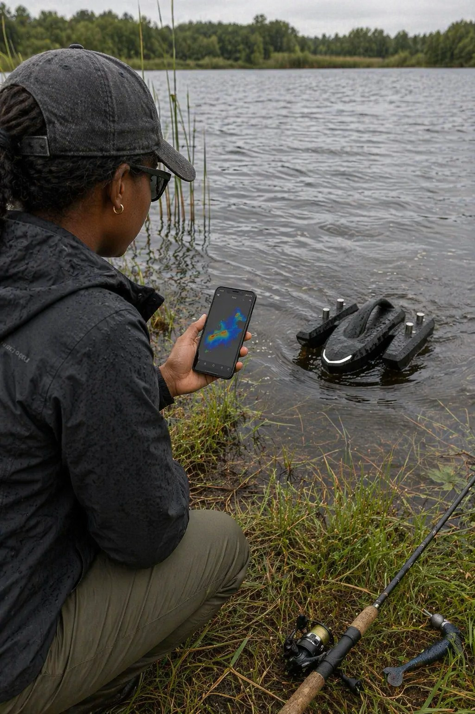
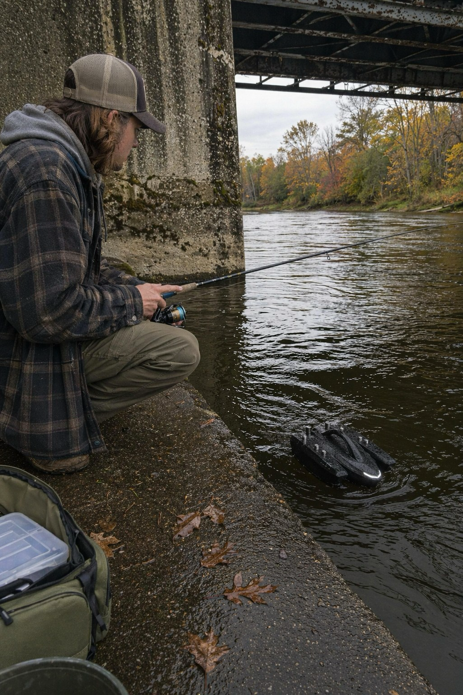
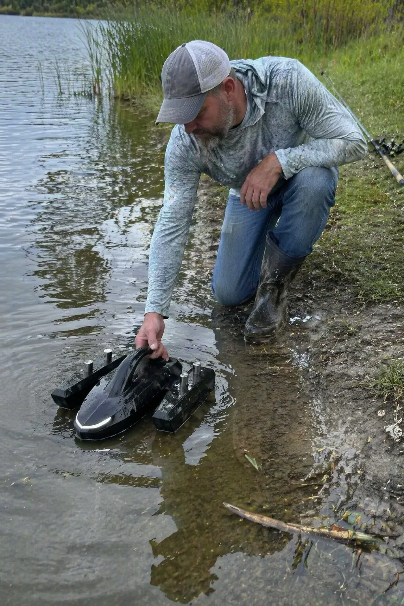

01
Bank-Ready Scout
Prototype setup beside rods and tackle before a shoreline scouting session.
Kastave is tested around docks, kayaks, rainy banks and bridge structure so anglers can scout water with better context before choosing where to cast.

Prototype setup beside rods and tackle before a shoreline scouting session.

Field testing from a kayak to check stability, range and control in open water.

Using the app view beside the water while the robot scans nearby structure.

Bridge-side testing where current, shade and hard edges make spot selection harder.

Wet-bank launch testing to keep deployment practical in everyday fishing conditions.
Each test scene focuses on the same practical problem: understanding what is happening under the surface before spending time on the wrong cast.
RESERVE FOR $1